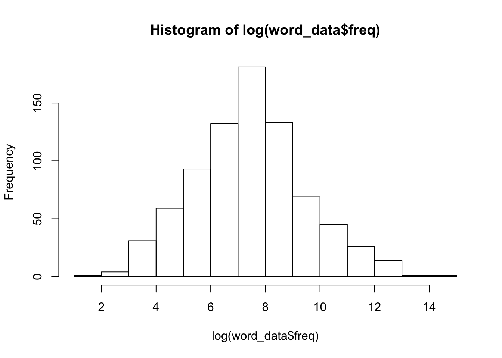
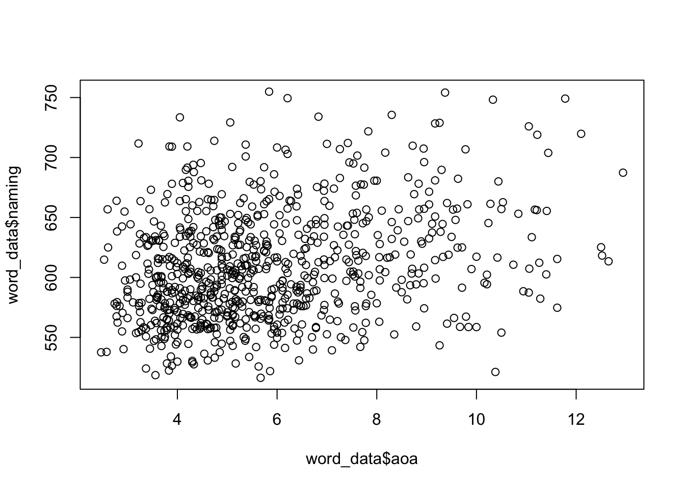

Visualizations are key to looking at your numbers (or whatever other form your data come in)…but especially numbers. They allow you to see relationships, and to understand those relationships in a clearer way than by looking at, say, correlation coefficients. In fact, one of the first steps you should take in developing an understanding of your data is to look at them in visual form.
You should think about visuals in terms of the types of relationships they represent. You will develop a repertoire of relationships between and within variables that you will go to for understanding what you have. This page covers some basics using both built in plotting functions to R and some other more advanced visuals. Once you have some basics down, then you will start to have intuitions about more complex visualizations that might suit your need.
The standard tool we have to visualize a monovariate distribution is the histogram. You can visualize a histogram with the built in function hist(). We will continue to use our word_data object, generated from the .xlsx file called 790_words.xlsx. Let’s generate a monovariate plot for the “freq” variable, which is a frequency metric from a large corpus of words - one value per word in these data.
hist(word_data$freq)You see that this distribution has a very long tail. We call this type of distribution a zipfian distribution. We can normalize the distribution by log transforming it:
hist(log(word_data$freq)) ## Bivariate visuals Bivariate visuals can get you seeing whether or not there is a possible relationship between two variables, and the character of that relationship. Indeed, it in a sense expresses a correlation, and can be useful alongside quantifications of correlation, like those generated from the cor() function. But more on that some other time. We can express a basic bivariate relationship with the function plot(). Here, let’s look at the relationship between “aoa”, or “age of acquisition” and “naming” (which is a variable that expresses how quickly on average a given word was named in a large naming study).
plot(word_data$aoa, word_data$naming)